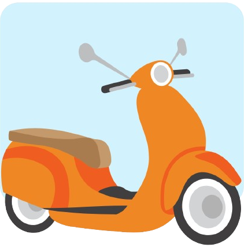

<ion-content [fullscreen]="true">
  <div class="bg-[#3ec4d8] h-full">
    <div class="container">
      <h1 class="p-4 pb-0 pt-8 text-[25px] font-semibold text-white">Activities</h1>
      <div *ngIf="noTransactions">
        <p>No transactions available.</p> <!-- Pesan yang muncul jika tidak ada transaksi -->
      </div>
      <div *ngIf="!noTransactions" class="pb-20">
        <ul>
          <li *ngFor="let transaction of transactions" >
            <div class="flex flex-col gap-4 p-4">
              <div>
                <div class="max-w-sm p-6 bg-white border border-gray-200 rounded-lg shadow dark:bg-gray-800 dark:border-gray-700">
                  <h1 class="mb-2">{{ transaction.created_at | date:'d MMMM yyyy' }}</h1>
                  <div class="flex flex-row justify-between">
                    
                    <div class="flex flex-col justify-between">
                      <div class="flex flex-row gap-4">
                        <p class="mb-3 font-normal text-gray-700 dark:text-gray-400">{{ transaction.rental.duration }} hours <br>of road trip.</p>
                        <p>Rp. {{ transaction.amount }}</p>
                      </div>
                      <div class="flex flex-row justify-between items-center">
                        <p>{{ transaction.rental.status }}</p>
                        <button (click)="viewTransaction(transaction.id)" type="button" class="text-gray-900 bg-white outline outline-gray-300 font-medium rounded-full text-sm px-5 py-1.5  0">Details</button>
                      </div>
                    </div>
                  </div>
                </div>
              </div>
            </div>
          </li>
        </ul>
      </div>
      <!-- Bottom Navbar -->
      <div class="fixed z-50 w-[90%] h-16 max-w-lg -translate-x-1/2 bg-white border border-gray-200 rounded-full bottom-4 left-1/2 dark:bg-gray-700 dark:border-gray-600">
        <!-- Tombol tambahan di sebelah kiri -->
            <button type="button" class="text-white absolute w-16 h-16 bg-cyan-400 rounded-full left-0 flex items-center justify-center bottom-0 hover:bg-cyan-600">
              <svg class="w-6 h-7 text-white dark:text-white" aria-hidden="true" xmlns="http://www.w3.org/2000/svg" width="24" height="24" fill="currentColor" viewBox="0 0 24 24">
                <path d="M7.978 4a2.553 2.553 0 0 0-1.926.877C4.233 6.7 3.699 8.751 4.153 10.814c.44 1.995 1.778 3.893 3.456 5.572 1.68 1.679 3.577 3.018 5.57 3.459 2.062.456 4.115-.073 5.94-1.885a2.556 2.556 0 0 0 .001-3.861l-1.21-1.21a2.689 2.689 0 0 0-3.802 0l-.617.618a.806.806 0 0 1-1.14 0l-1.854-1.855a.807.807 0 0 1 0-1.14l.618-.62a2.692 2.692 0 0 0 0-3.803l-1.21-1.211A2.555 2.555 0 0 0 7.978 4Z"/>
              </svg>
            </button>
  
        <!-- Tombol navigasi utama -->
        <div class="grid h-full max-w-lg grid-cols-4 mx-auto">
            <button data-tooltip-target="tooltip-home" type="button" class="inline-flex flex-col items-center justify-center px-5 py-2 rounded-s-full hover:bg-gray-50 dark:hover:bg-gray-800 group">      
            </button>
            <!-- Tombol Home -->
            <button data-tooltip-target="tooltip-home" [routerLink]="['/home']" type="button" class="inline-flex flex-col items-center justify-center px-5 py-2 hover:bg-gray-50 dark:hover:bg-gray-800 group">
              <svg class="w-5 h-5 text-cyan-400 dark:text-gray-400 group-hover:text-cyan-500 dark:group-hover:text-cyan-500" aria-hidden="true" xmlns="http://www.w3.org/2000/svg" fill="currentColor" viewBox="0 0 20 20">
                  <path d="m19.707 9.293-2-2-7-7a1 1 0 0 0-1.414 0l-7 7-2 2a1 1 0 0 0 1.414 1.414L2 10.414V18a2 2 0 0 0 2 2h3a1 1 0 0 0 1-1v-4a1 1 0 0 1 1-1h2a1 1 0 0 1 1 1v4a1 1 0 0 0 1 1h3a2 2 0 0 0 2-2v-7.586l.293.293a1 1 0 0 0 1.414-1.414Z" />
              </svg>
              <span class="sr-only">Home</span>
            </button>
            <div id="tooltip-home" role="tooltip" class="absolute z-10 invisible inline-block px-3 py-2 text-sm font-medium text-white transition-opacity duration-300 bg-gray-900 rounded-lg shadow-sm opacity-0 tooltip dark:bg-gray-700">
              Home
              <div class="tooltip-arrow" data-popper-arrow></div>
            </div>
  
            <button data-tooltip-target="tooltip-history" [routerLink]="['/activities']" type="button" class="inline-flex flex-col items-center justify-center px-5 py-2 hover:bg-gray-50 dark:hover:bg-gray-800 group">
              <svg class="w-6 h-7 text-cyan-400 dark:text-gray-400 group-hover:text-cyan-500 dark:group-hover:text-cyan-500" aria-hidden="true" xmlns="http://www.w3.org/2000/svg" fill="currentColor" viewBox="0 0 24 24">
                <path fill-rule="evenodd" d="M2 12C2 6.477 6.477 2 12 2s10 4.477 10 10-4.477 10-10 10S2 17.523 2 12Zm11-4a1 1 0 1 0-2 0v4a1 1 0 0 0 .293.707l3 3a1 1 0 0 0 1.414-1.414L13 11.586V8Z" clip-rule="evenodd"/>
              </svg>
              
              <span class="sr-only">History</span>
            </button>
            <div id="tooltip-history" role="tooltip" class="absolute z-10 invisible inline-block px-3 py-2 text-sm font-medium text-white transition-opacity duration-300 bg-gray-900 rounded-lg shadow-sm opacity-0 tooltip dark:bg-gray-700">
              History
              <div class="tooltip-arrow" data-popper-arrow></div>
            </div>
  
            <button data-tooltip-target="tooltip-profile" [routerLink]="['/profile']" type="button" class="inline-flex flex-col items-center justify-center px-5 rounded-e-full hover:bg-gray-50 dark:hover:bg-gray-800 group">
              <svg class="w-6 h-7 mb-1 text-cyan-400 dark:text-gray-400 group-hover:text-cyan-500 dark:group-hover:text-cyan-500" aria-hidden="true" xmlns="http://www.w3.org/2000/svg" fill="currentColor" viewBox="0 0 20 20">
                <path fill-rule="evenodd" d="M12 4a4 4 0 1 0 0 8 4 4 0 0 0 0-8Zm-2 9a4 4 0 0 0-4 4v1a2 2 0 0 0 2 2h8a2 2 0 0 0 2-2v-1a4 4 0 0 0-4-4h-4Z" clip-rule="evenodd"/>
              </svg>
              
              <span class="sr-only">Profile</span>
            </button>
            <div id="tooltip-profile" role="tooltip" class="absolute z-10 invisible inline-block px-3 py-2 text-sm font-medium text-white transition-opacity duration-300 bg-gray-900 rounded-lg shadow-sm opacity-0 tooltip dark:bg-gray-700">
              Profile
              <div class="tooltip-arrow" data-popper-arrow></div>
            </div>
        </div>
      </div>
    </div>
  </div>
  
</ion-content>